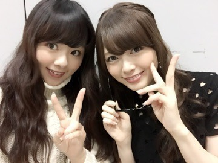
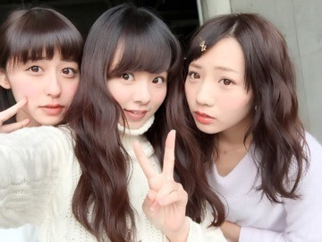
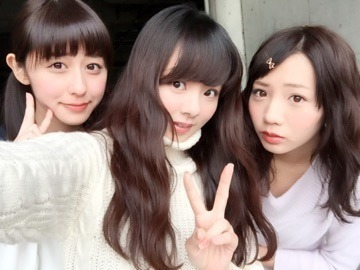
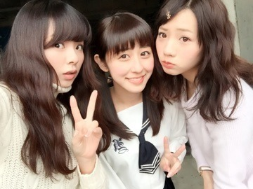
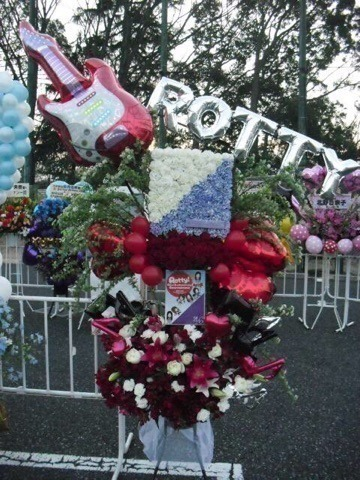
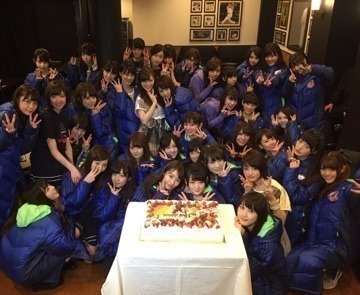

| 2015/02 25 Wed | 川村真洋 乃木團！ ワンナイ トカーニバル&ぐる ぐるカーテン まに。 |
こんばんわ！まいやんと❤️
まにだよ？Rottyだよ？

昨日発売開始の『Samurai ELO』と言う雑誌に乃木坂46出てますので是非買ってね（＾ω＾）
私も居ます！！！
あとあと、今夜は
■BSの「スカパー!音楽祭 2015」でした！
■BSの「スカパー!音楽祭 2015」でした！
新曲『命は美しい』を披露させて頂きました。
急遽れなさんポジで私が出ることになりまして、昨晩に立ち位置や移動を動画見ながら頭に叩き込んで来ました❤️わら
歌もかっこいいしダンスもかっこいい感じで、、好き！
スカパーに出れたこと、新曲を初披露できたこと 嬉しく思っています！
とりあえず楽しくパフォーマンスできましたヾ(＠⌒ー⌒＠)ノ
ありがとうございました！
昨日仕事終わって家に着いたら七瀬から
『まみろ明日がんばろな✌(о´∀`о)』って連絡が入ってた。
ちょっと焦ってる自分が居たから落ちついた～。七瀬ありがとや！
ちー まに あみ

ちー まに あみ

まに ちー あみ

そしてそして！西武どーーーーーーーーむ。
乃木坂 3周年記念LIVE。
7時間半に渡って全力でやったLIVE。
最高でした！ 皆本当にありがとうございました！！！
スタッフの皆さんも、本当にありがとうございました！
7時間半あっとゆーまでした❤️
ダブルアンコールきたら1人でもステージ立てる体力、有り余ってました(*^_^*)
寒い中、西武ドームまで来てくれた皆、本当にありがとう！
風邪ひかないように帰ってちゃんと暖まったかな？

後は、乃木團ですよね！！！
去年乃木坂の初バンドをやってから
ずっと「乃木團やってほしい！又見たい！」等と有難い声がありまして、私達も又したいな～。っとずっと乃木團で話していました！
でもまさかドームで乃木團ができるとは思っていなかったので、この話を聞いた時は本当にビックリしました！嬉しかったんです！
それで普通にリハと並行して乃木團の練習もしていました（＾ω＾）
今だから言える。。睡眠時間が、、、笑
あんなに皆さんが盛り上がってくださって本当に嬉しかったです！頑張って良かったと思いました！
ありがとうございました！！！
左下まに。

のし。まに